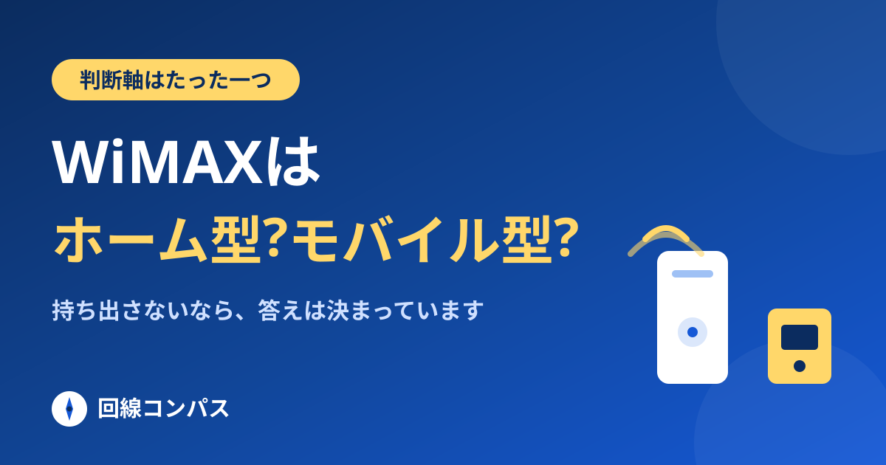
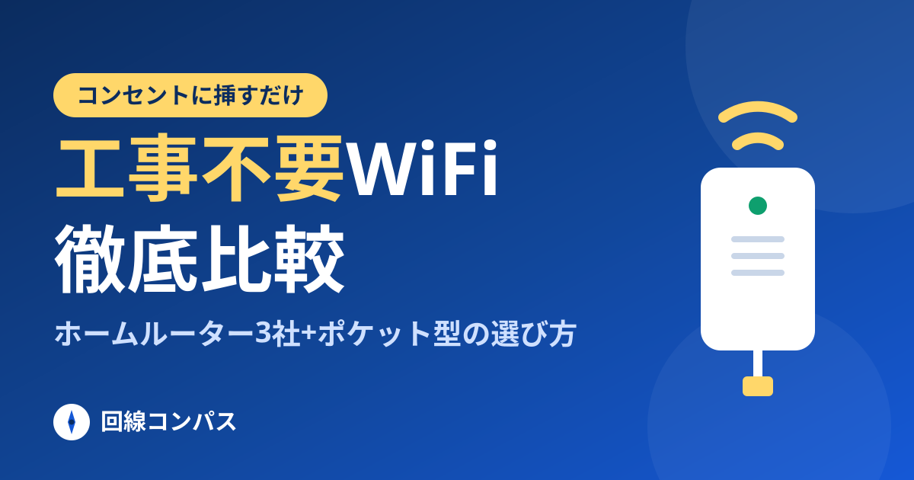
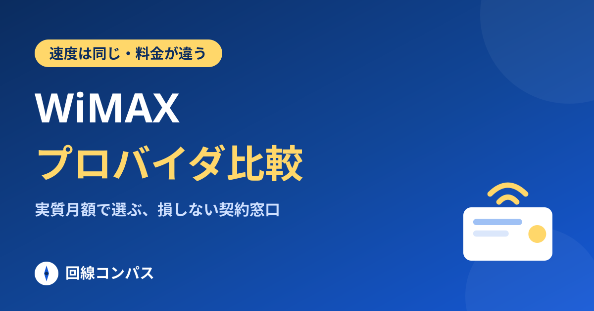
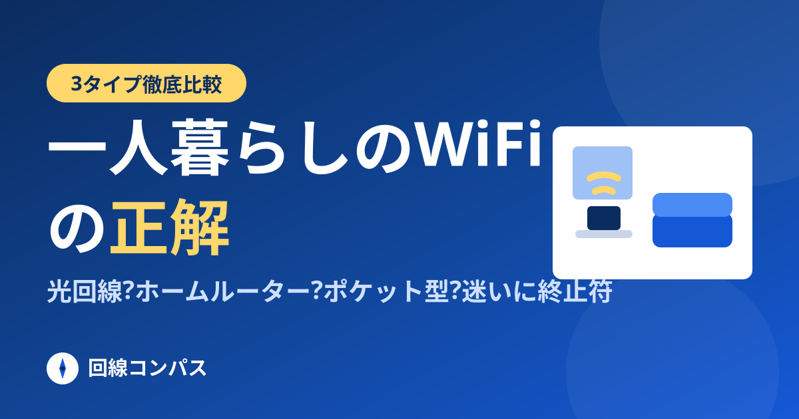
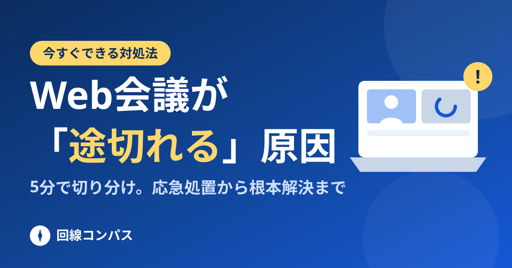

 選び方 WiMAXはホームルーターとモバイル型どっち?【2026年】後悔しない選び分け 判断軸は「持ち出すかどうか」の一点。電波・接続台数・有線ポートの違いを解説。 2026.08.29 公開
 比較 工事不要WiFiおすすめ比較【2026年】ホームルーター3社+ポケット型の選び方 home 5G・WiMAX・エアーの3社をスマホ別に。8日以内の見極め方も。 2026.08.29 更新
 窓口比較 WiMAXプロバイダおすすめ比較|速度は全社同じ、選ぶ基準は実質月額 回線は同じ、料金だけ違う。2026年10月の一斉値上げへの対処法も。 2026.08.29 公開
 選び方 一人暮らしのWiFiはどれが正解?光回線・ホームルーター・ポケット型を本音で比較 4つの質問で答えが出る。テザリングで十分なケースも正直に書きました。 2026.08.29 更新
 トラブル解決 Web会議が途切れる・固まる原因と対処法|5分でできる切り分け手順 応急処置3段構えと、犯人(回線・Wi-Fi・PC)の切り分け手順。 2026.08.29 更新